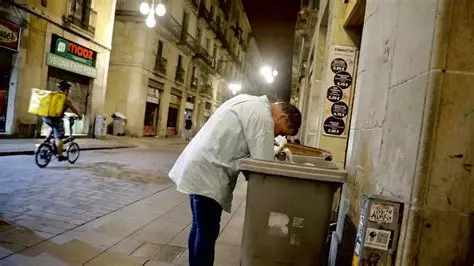

Impacte sobre les persones

Moltes persones treballen però encara viuen per sota del llindar de pobresa: segons l’ONG Oxfam Intermón, al 2024 la
taxa de “pobreza laboral” a Espanya era del 13,7 %, encara que tenien feina. Entre els col·lectius més afectats hi ha
treballadors en sectors vulnerables com l’agricultura i la feina de la llar, on tres de cada deu treballadors viuen en
pobresa malgrat estar ocupats. També són especialment vulnerables les persones amb contractes parcials, autònoms,
persones migrants, famílies nombroses o llars monoparentals.
A Catalunya, al voltant del 7,7 % dels treballadors amb contracte viuen per sota del llindar de pobresa. Aquesta
situació evidencia que tenir feina no garanteix sortir de l’exclusió: la precarietat, els sous baixos, la temporalitat o
la parcialitat continuen condemnament moltes persones a la vulnerabilitat.
Aquestes condicions — baixos ingressos, inseguretat laboral, dificultats per accedir a habitatge adequat o pagar serveis
bàsics — tenen un impacte directe sobre la dignitat, el benestar, l’estabilitat de les famílies, i la capacitat de
planificar el futur. L’augment de la pobresa laboral també sovint acompanya abandonament d’estudis, limitació de les
oportunitats educatives i de mobilitat social, cosa que perpetua la desigualtat i l’exclusió intergeneracional. Tot això
repercuteix en major vulnerabilitat davant crisis econòmiques, sanitàries o inflacionàries.
Impacte sobre les empreses
La pobresa laboral i la desigualtat de renda afecten directament l’activitat de les empreses. Els treballadors amb sous
baixos o inestables tenen menys capacitat de consumir i estalviar, cosa que disminueix la demanda interna i limita el
creixement de negocis, especialment dels sectors de consum i serveis. La precarietat laboral també provoca rotació alta,
menys compromís i productivitat limitada dins de les empreses, i genera costos addicionals per formació i substitució de
personal.
Les empreses que operen en entorns amb alta desigualtat poden patir un mercat laboral menys estable, dificultat per
retenir talent i risc d’efectes negatius sobre la reputació corporativa. Per contra, empreses que ofereixen salaris
dignes, condicions laborals estables i polítiques socials responsables contribueixen a reduir la pobresa, milloren el
benestar dels treballadors i generen beneficis indirectes a través d’un consum més estable i d’una força laboral més
compromesa.
Impacte sobre l'activitat econòmica
La combinació de pobresa laboral, salaris baixos i desigualtat de renda té implicacions econòmiques estructurals. La
part de població amb ingressos baixos té una menor capacitat de consum i d’estalvi, i la desigualtat en renda disponible
i en patrimoni augmenta quan l’atur és alt i la temporalitat laboral elevada.
Això significa que una gran fracció de la població no té prou poder adquisitiu per participar plenament en l’economia
interna: menys consum, menys demanda de béns i serveis, menys estabilitat per a les famílies. Aquesta debilitat de la
demanda interna pot frenar el creixement econòmic, reduir la inversió, i generar una espiral de baixa activitat,
especialment en sectors depenents del consum domèstic.
A més, l’alta incidència de la “pobreza en el trabajo” revela un mercat laboral estructuralment fràgil: molts
treballadors amb contractes temporals, parcialitat o autònoms no aconsegueixen ingressos suficients. Aquest model
debilita l’estabilitat de la força laboral i la seguretat social, encarant problemes per al desenvolupament econòmic i
el benestar col·lectiu.
Mesures o accions preses
Diferents organismes, entitats i institucions han adoptat — o promogut — polítiques per pal·liar la pobresa i la
precarietat. Per exemple, informes recents recullen el paper del sistema de protecció social a Espanya i les mesures de
prestacions i subvencions que han ajudat a reduir la desigualtat de renda i la pobresa.
També s’han reforçat instruments com l’Ingreso Mínimo Vital per garantir un nivell mínim de renda a famílies
vulnerables, especialment aquelles amb treball precari, temporals o situació de risc.
A nivell acadèmic i de recerca, hi ha estudis que analitzen l’evolució de la desigualtat, del mercat laboral i de les
condicions de treball a Espanya, per documentar la “pobreza laboral” i proporcionar diagnòstics clars sobre quins grups
socials són més vulnerables: autònoms, treballadors a temps parcial, temporals, famílies amb menors, persones migrants,
etc.
En conjunt, aquestes mesures i accions — protecció social, prestacions mínimes, estudis i diagnòstics — configuren un
marc de resposta institucional a la pobresa i desigualtat, amb l’objectiu de reduir la vulnerabilitat de les persones i
pal·liar els efectes negatius de la precarietat laboral.
Propostes de mesures
Diversos analistes i institucions suggereixen que per abordar el problema estructural de la pobresa calen polítiques més
profundes i integrals. Entre les propostes hi ha reforçar el sistema de protecció social, garantir ingressos mínims
reals, i assegurar que les prestacions arriben efectivament a les llars vulnerables.
També es proposa millorar la qualitat de l’ocupació: reduir la temporalitat, la parcialitat involuntària, fomentar la
contractació estable, revisar les condicions laborals i salarials per garantir que tenir treball signifiqui poder viure
dignament.
Altres propostes passen per combinar polítiques de treball amb polítiques de consum, habitatge i redistribució de la
riquesa: fomentar l’accés a habitatge assequible, regular el mercat laboral, reforçar l’estat de benestar i les
proteccions socials, i garantir igualtat d'oportunitats per a col·lectius vulnerables.
També se suggereix que per reduir desigualtats i pobresa estructural cal una acció coordinada a nivell estatal i
autonòmic, amb polítiques públiques efectives, transparents i orientades a llarg termini que combine aspectes econòmics,
laborals i socials.